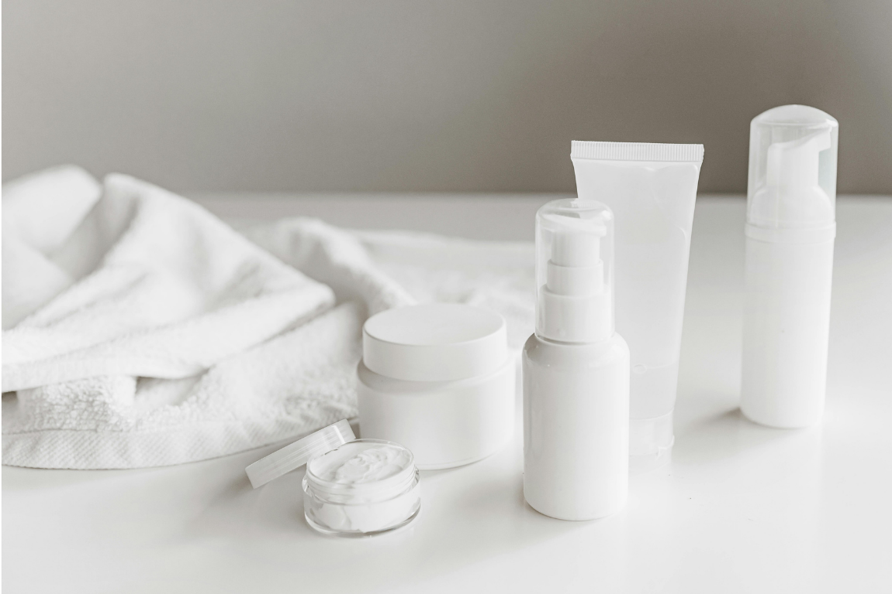

Pureskin adalah klinik kecantikan yang menghadirkan perawatan kulit profesional
sekaligus menyediakan rangkaian produk kecantikan berkualitas. Kami berkomitmen
membantu Anda merawat kulit agar tetap sehat, cerah, dan percaya diri.
WHAT WE CAN DO FOR YOU
BOOST YOUR SKIN WITH OUR PRODUCTS

Produk Pureskin diformulasikan untuk membantu merawat kulit agar tetap sehat,
lembap, dan bercahaya. Setiap produk dibuat dengan bahan pilihan yang aman dan
efektif untuk mendukung perawatan kulit Anda sehari-hari.
Lihat lebih lanjut